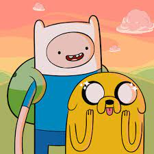

Adventure Time is an animated series set in the post-apocalyptic Land of Ooo, where humans, magical creatures, and candy people coexist. The show follows the adventures of Finn, a young boy and brave hero, and his shape-shifting dog companion, Jake. Together, they embark on thrilling quests, exploring the vast and whimsical landscapes of Ooo
Throughout the series, Finn and Jake encounter a diverse cast of characters, including Princess Bubblegum, the ruler of the Candy Kingdom, Marceline the Vampire Queen, the Ice King, and many others. They navigate through various challenges, confront evil villains, and unravel the mysteries of the Land of Ooo
As the story unfolds, Adventure Time delves into deeper themes of friendship, love, self-discovery, and the meaning of life. The narrative intertwines humor, action, and emotional moments, creating a unique blend of lightheartedness and depth. The show's nonlinear storytelling allows for imaginative and surreal adventures, often incorporating elements of fantasy and science fiction